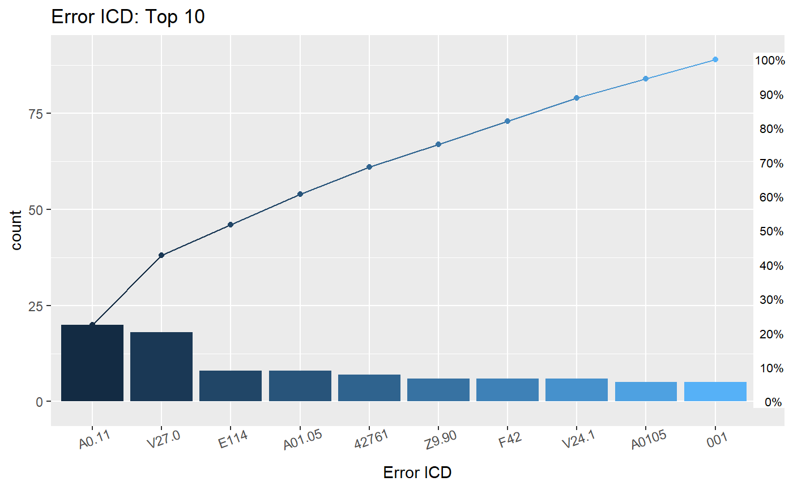
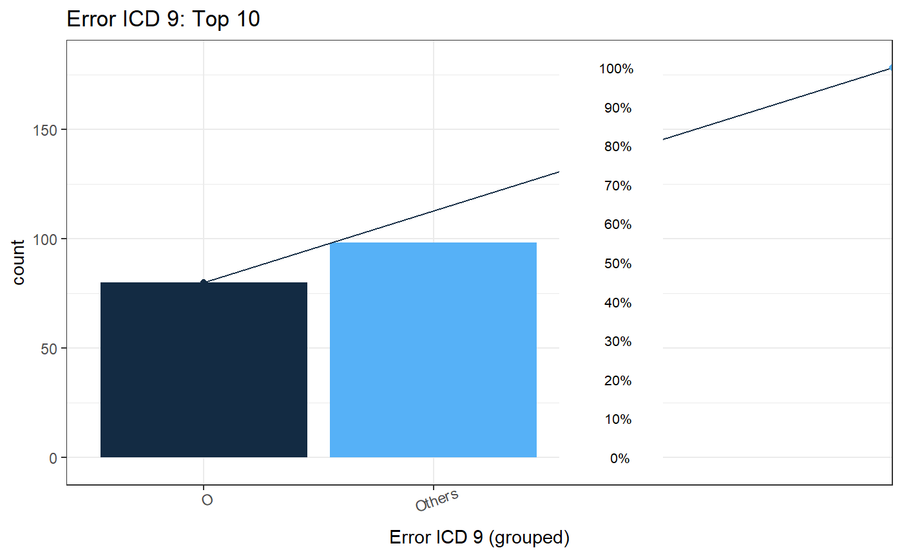

plot_errorICD.RdPareto Plot of error ICD Codes
plot_errorICD(errorFile, ICDVersion = all, wrongICDType = all, groupICD = FALSE, Others = TRUE, TopN = 10)
| errorFile | error file from ICD uniform function (`IcdDxDecimalToShort` or `IcdDxShortToDecimal`) |
|---|---|
| ICDVersion | ICD version |
| wrongICDType | Wrong ICD type |
| groupICD | Only ICD-9 codes can be grouped, because ICD 10 already has unique alphanumeric codes to identify known diseases. Default is FALSE |
| Others | Default is TRUE |
| TopN | Default is Top "10" |
head(sampleDxFile)#> ID ICD Date #> 1: A2 Z992 2020-05-22 #> 2: A5 Z992 2020-01-24 #> 3: A8 Z992 2015-10-27 #> 4: A13 Z992 2020-04-26 #> 5: A13 Z992 2025-02-02 #> 6: A15 Z992 2023-05-12#>#>#>#>#>#>#> Warning: The ICD mentioned above matches to "NA" due to the format or other issues.#> Warning: "Wrong ICD format" means the ICD has wrong format#> Warning: "Wrong ICD version" means the ICD classify to wrong ICD version (cause the "icd10usingDate" or other issues)plot_errorICD(errorFile = error$Error, ICDVersion = 9, wrongICDType = all, groupICD = TRUE, Others = TRUE, TopN = 3)#> $graph#> #> $ICD #> ICDGroup groupCount CumCountPerc MostICDInGroup ICDPercInGroup #> 1: A 13 41.94% A01.05 61.54% #> 2: 7 9 70.97% 75.52 44.44% #> 3: 0 5 87.1% 001 100% #> 4: Others 4 100% E03.0 100% #> IcdVersionInFile #> 1: ICD 9 #> 2: ICD 9 #> 3: ICD 9 #> 4: ICD 9 #>plot_errorICD(errorFile = error$Error, ICDVersion = all, wrongICDType = all, groupICD = FALSE, Others = TRUE)#> $graph#> #> $ICD #> ICD count CumCountPerc IcdVersionInFile WrongType Suggestion #> 1: A0.11 20 18.35% ICD 10 Wrong format #> 2: V27.0 18 34.86% ICD 10 Wrong version #> 3: E114 8 42.2% ICD 10 Wrong format #> 4: A01.05 8 49.54% ICD 9 Wrong version #> 5: 42761 7 55.96% ICD 10 Wrong version #> 6: Z9.90 6 61.47% ICD 10 Wrong format #> 7: F42 6 66.97% ICD 10 Wrong format #> 8: V24.1 6 72.48% ICD 10 Wrong version #> 9: A0105 5 77.06% ICD 9 Wrong version #> 10: 001 5 81.65% ICD 9 Wrong format 0019 #> 11: Others 20 100% ICD 9 Wrong format #>